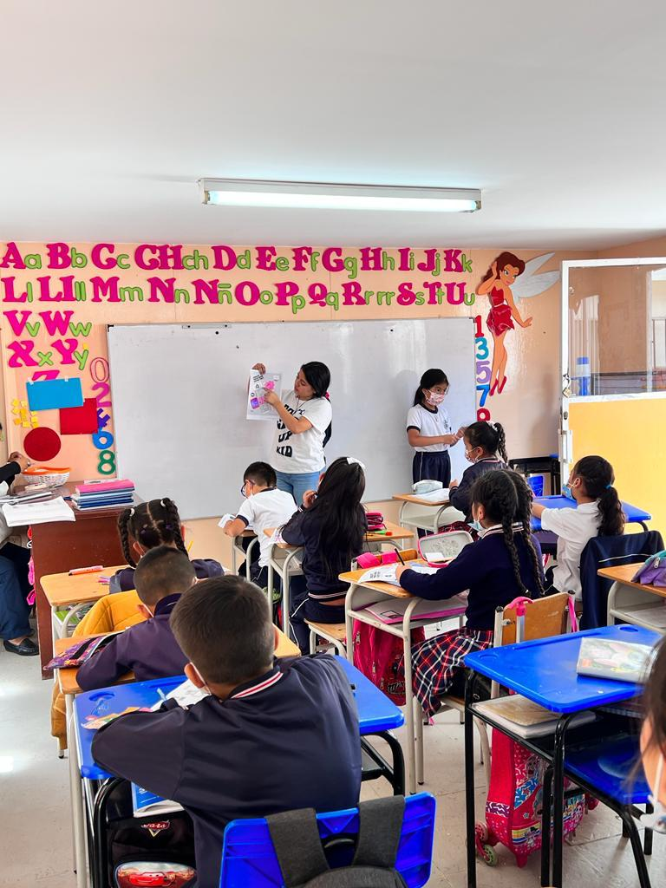
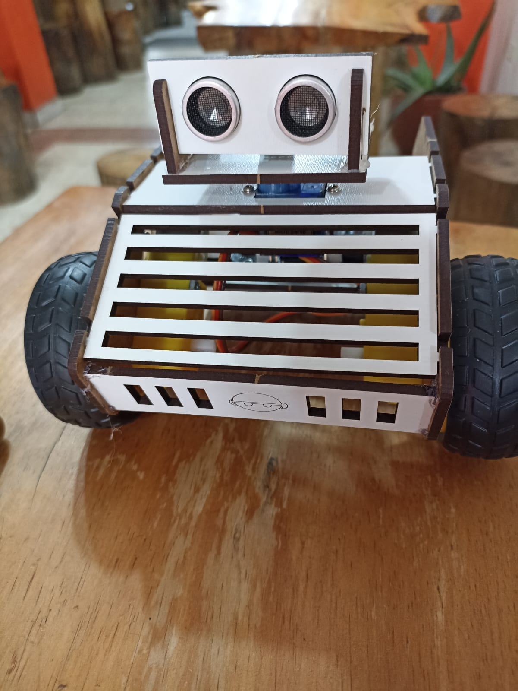
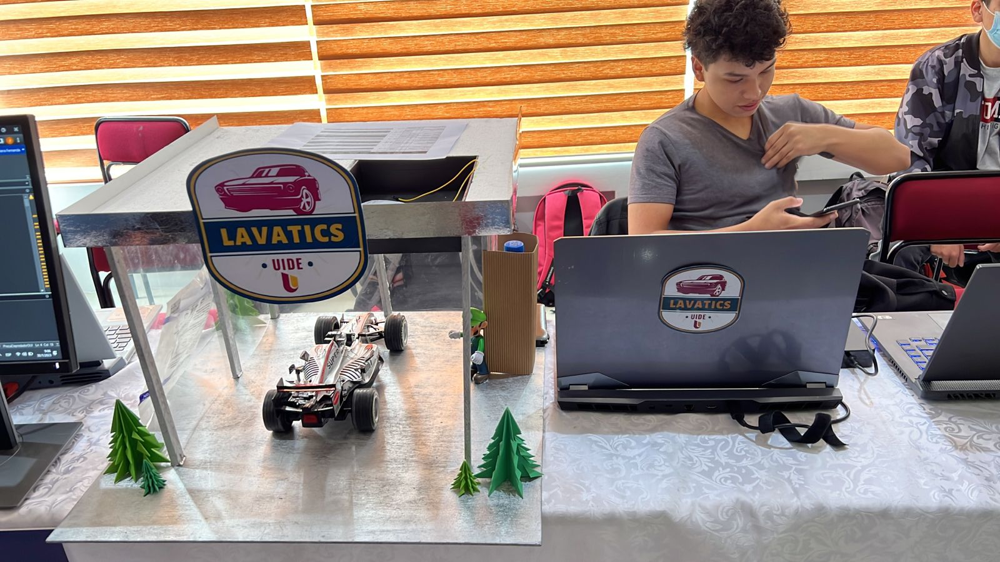

Arlette Stefanny Portilla Cartuche
Ingeniera en TICS
Proyectos Realizados
Docente
He tenido el privilegio de ser docente de TICs en varias instituciones educativas, donde he guiado a estudiantes en el uso y manejo de herramientas digitales. Mi enfoque pedagógico se ha centrado en la promoción de habilidades prácticas y críticas para el uso de las tecnologías, fomentando su aplicación en proyectos creativos e innovadores.
Link del ProyectoRobot
Fui parte de un equipo interdisciplinario que construyó y programó un robot para cumplir una tarea específica. Durante el proceso, adquirí habilidades en diseño mecánico, programación y electrónica. Mi rol en el proyecto fue la construcción y contribuí en la programación del robot utilizando herramientas de programación como Arduino y Python, y la integración de los componentes electrónicos para asegurar un funcionamiento eficiente y óptimo. Esta experiencia me permitió desarrollar habilidades valiosas en ingeniería, así como el trabajo en equipo.
Link del proyectoLavaTics
Junto con mi grupo de compañeros creamos un prototipo innovador de lavadora de carros que se controlaba de manera remota mediante un teléfono celular. Este proyecto implicó la creación y diseño de un prototipo funcional que permitía al usuario controlar y monitorear el proceso de lavado de su vehículo desde cualquier lugar. Esta experiencia me permitió desarrollar habilidades valiosas en ingeniería, diseño de prototipos, electrónica, y en la resolución de problemas complejos mediante la creatividad y la innovación
Link del proyectoFormacion Academica
Estudios Primarios y Secundarios
Unidad Educativa Fiscomisional "Ecuador Amazonico"
Unidad Educativa fiscomisional "Cacha"
Unidad Educativa del Milenio "Arutam"
Unidad Educactiva "Tumbez Marañon"
Escuela "Leonidad Garcia"
Estudios Superior
Universidad Internacional Del Ecuador